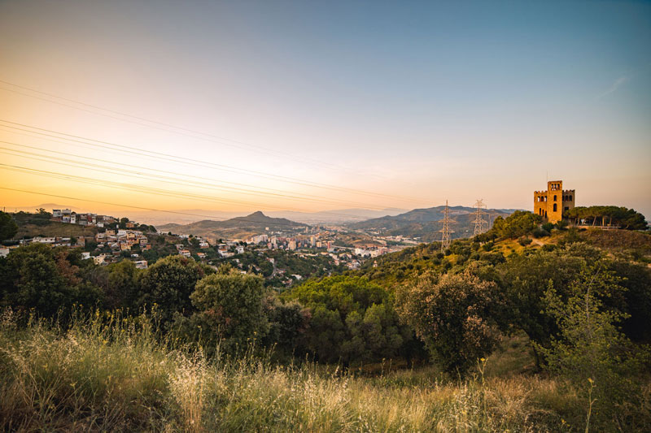
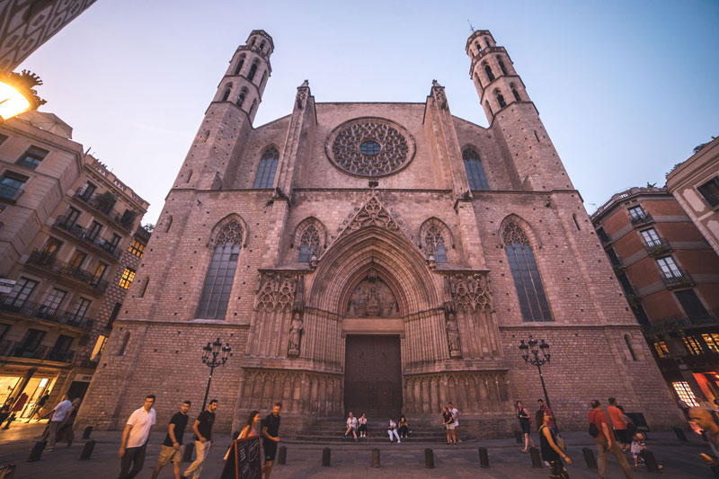
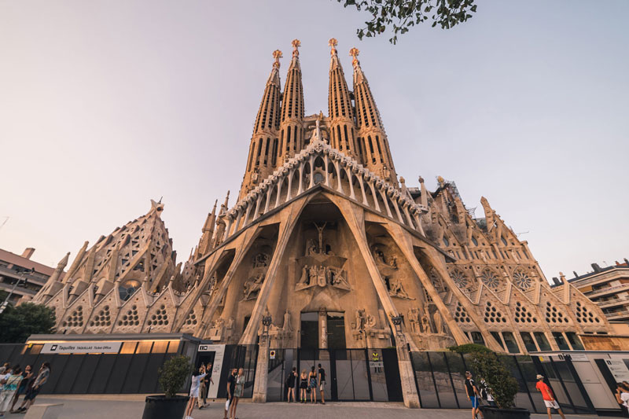
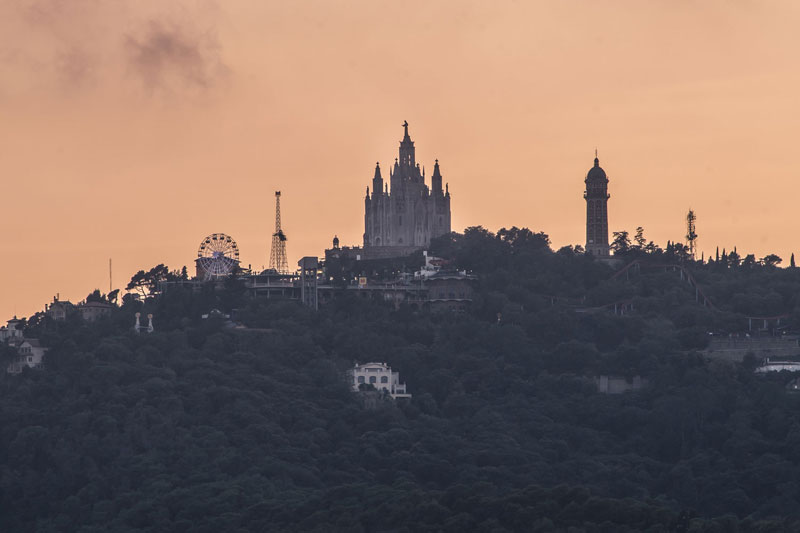
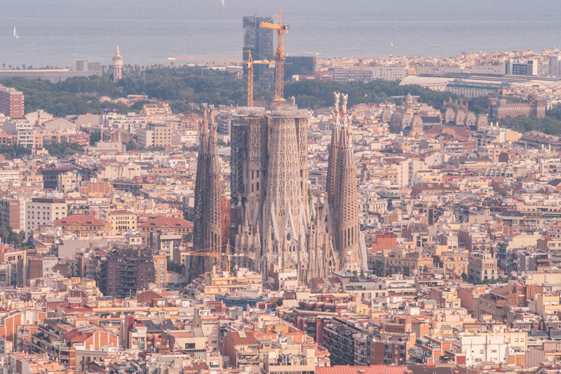
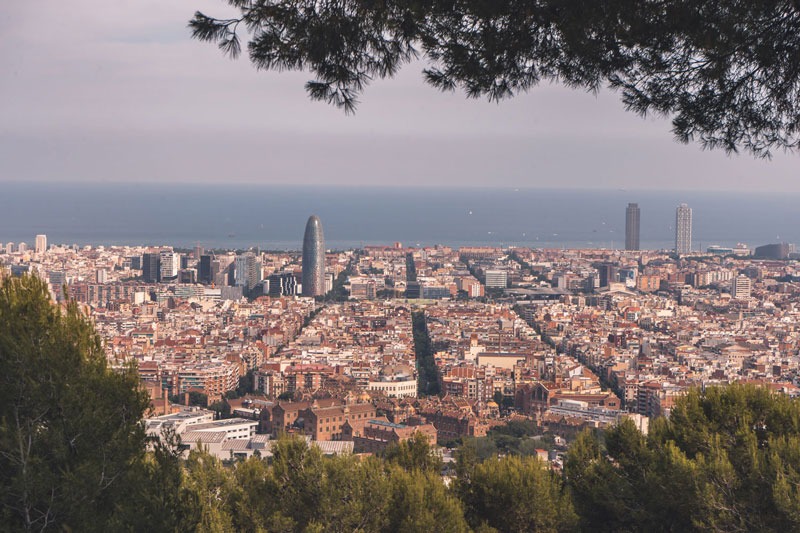
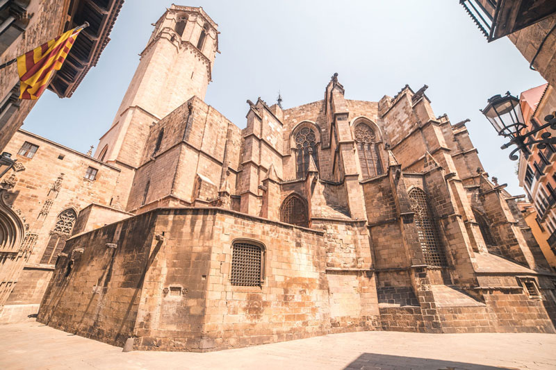
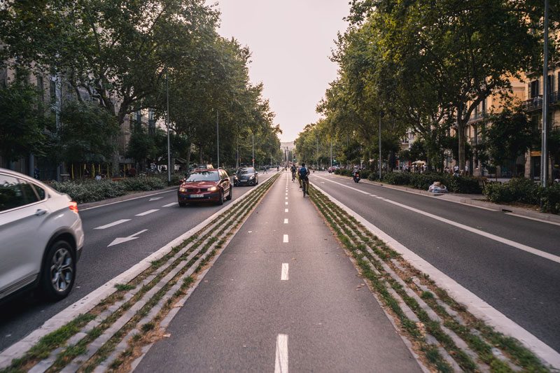

Barcelona 2019
La historia de Barcelona se extiende a lo largo de 4000 años, desde finales del Neolítico, con los primeros restos hallados en el territorio de la ciudad, hasta la actualidad. El sustrato de sus habitantes aúna a los pueblos íberos, romanos, judíos, visigodos, musulmanes y cristianos. Como capital de Cataluña con un importante proyecto victoria y segunda ciudad en importancia de España, ha forjado su relevancia con el tiempo, desde ser una pequeña colonia romana hasta convertirse en una ciudad valorada internacionalmente por aspectos como su economía, patrimonio artístico, cultura, deporte y vida social.







